MONAMI Lab launches at Jeonbuk National University.
MONAMI Lab begins its research in high-fidelity multiphysics simulation, reactor digital twins, and HPC-based particle methods.
Multiphysics fOr Nuclear Analysis, Modeling and Innovation
원자력 다물리 해석·모델링 연구실
Since 2026
연구 소개
MONAMI 연구실에서는 차세대 원자력 시스템의 해석을 위한 계산과학 및 시뮬레이션 기술을 연구합니다. 원자력 열수력을 중심으로 계통 수준의 모델링과 상세 고정밀 수치해석을 연계하고, 복잡한 유동과 다물리 현상을 정밀하고 효율적으로 해석하기 위한 입자 기반 수치해석 기법과 GPU 병렬계산 기술을 개발합니다.
이러한 계산 기술을 바탕으로 차세대 원자로의 정상 운전, 과도 상태 및 중대사고에서 나타나는 다양한 현상을 예측하고 안전성을 평가하고자 합니다. 장기적으로는 원자로 물리와 구조역학을 포함한 다물리·다중스케일 해석으로 연구 범위를 확장하고, 물리 기반 시뮬레이션과 데이터를 결합한 원자력 디지털트윈의 계산 기반을 구축하는 것을 목표로 합니다.
MONAMI Lab studies computational science and simulation technologies for the analysis of advanced nuclear systems. With a focus on nuclear thermal hydraulics, we connect system-level modeling with detailed high-fidelity numerical analysis and develop particle-based methods and GPU-parallel computing technologies for complex flow and multiphysics phenomena.
These capabilities support the prediction and safety assessment of advanced reactors under normal operation, transients, and severe accidents. In the long term, we aim to extend our work toward multiphysics and multiscale analysis involving reactor physics and structural mechanics, establishing a computational foundation for nuclear digital twins that combine physics-based simulation with data.
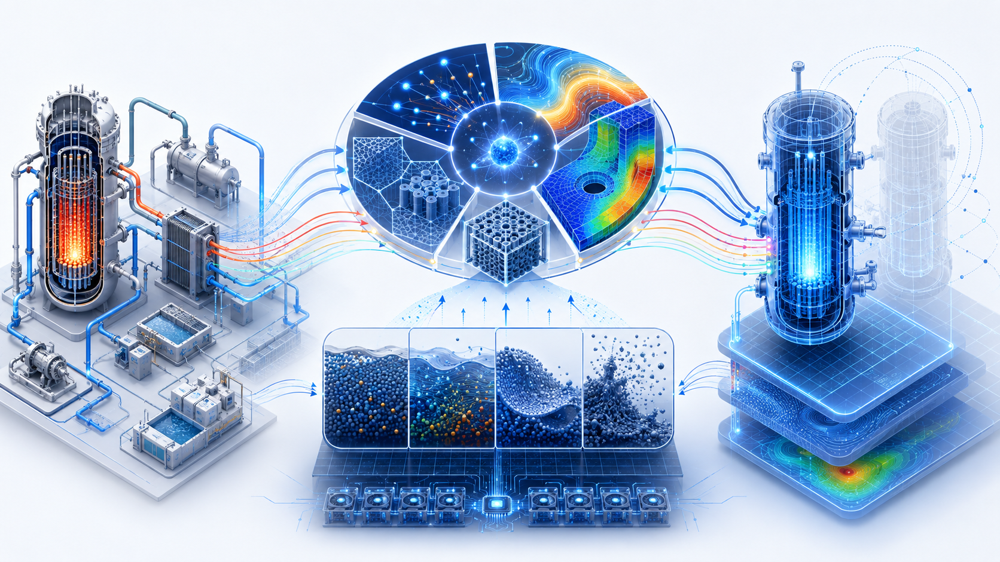
Latest updates
MONAMI Lab begins its research in high-fidelity multiphysics simulation, reactor digital twins, and HPC-based particle methods.
Research directions
Our research connects nuclear multiphysics, high-fidelity computation, advanced reactor analysis, and data-informed modeling across scales.
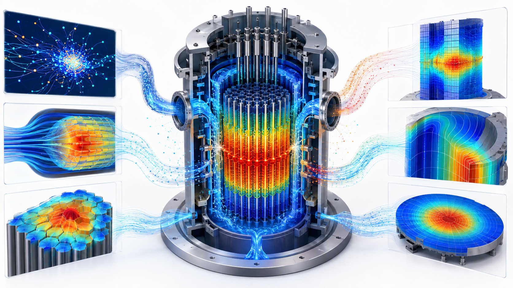
Integrating reactor physics, thermal hydraulics, and structural mechanics through coupled models and simulation codes for steady-state and transient reactor analysis.
Go to page →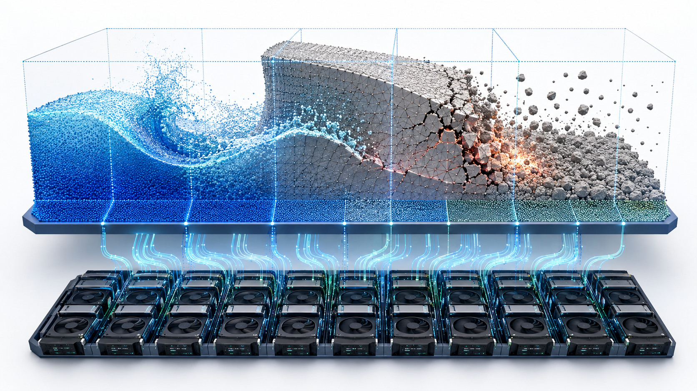
Resolving complex local phenomena—including multiphase flow, free surfaces, melting and solidification, and severe accidents—using particle methods and GPU computing.
Go to page → 03 · ADVANCED REACTORSInvestigating the distinctive physics and behavior of SMRs and non-light-water advanced reactors across core, system, operational, transient, and accident conditions.
Go to page →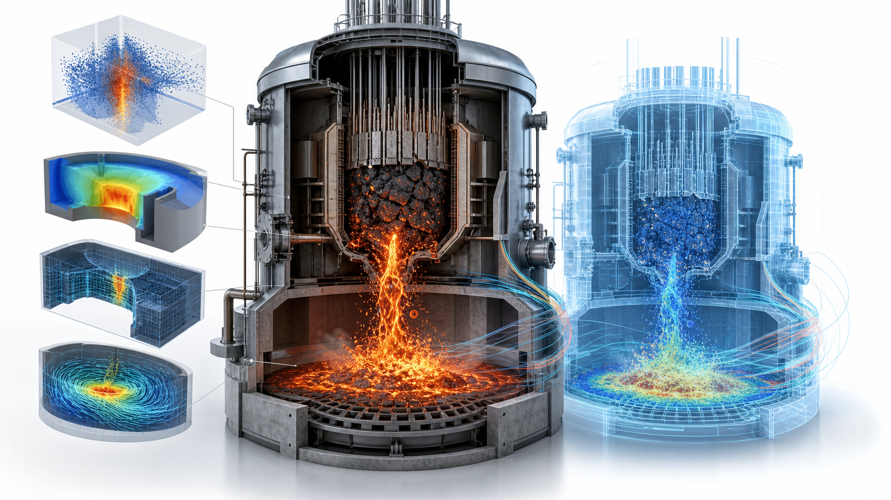
Combining physics-based simulation with experimental and operational data through reduced-order models, surrogate models, AI, and state estimation for fast reactor prediction.
Go to page →MONAMI Lab

Principal Investigator
Assistant Professor, Department of Quantum Systems Engineering
Jeonbuk National University
Publications
Journal articles, conference presentations, and scientific software that establish the computational foundations of MONAMI Lab.
Selected recent papers - click a first page to enlarge
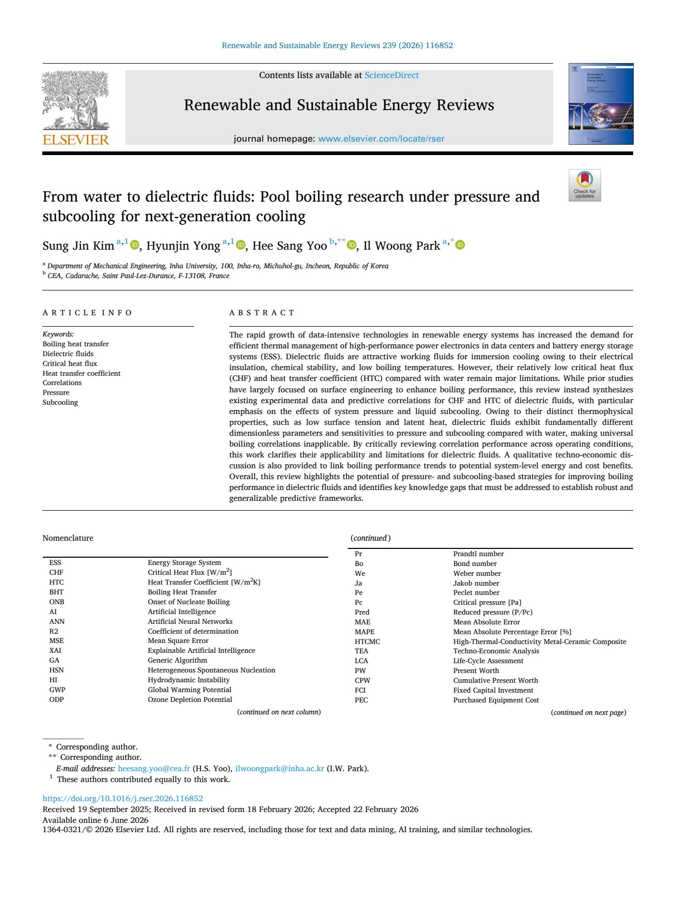
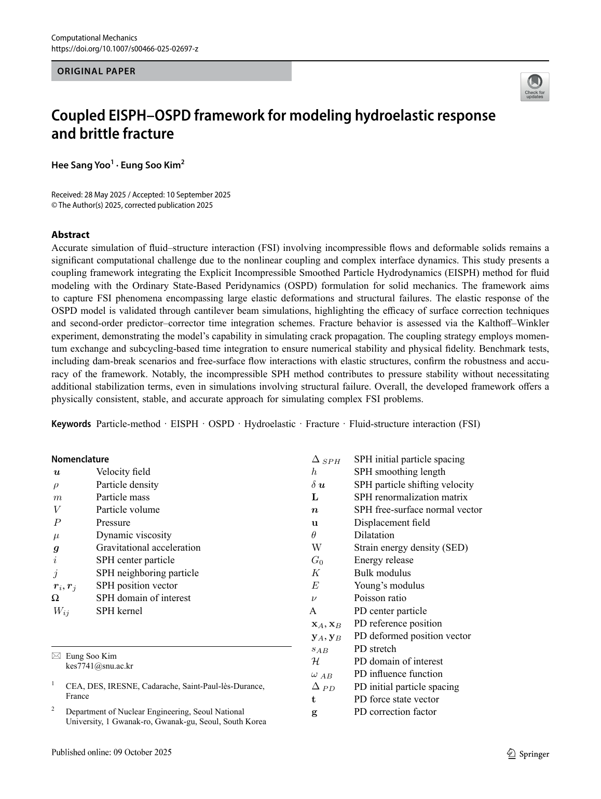
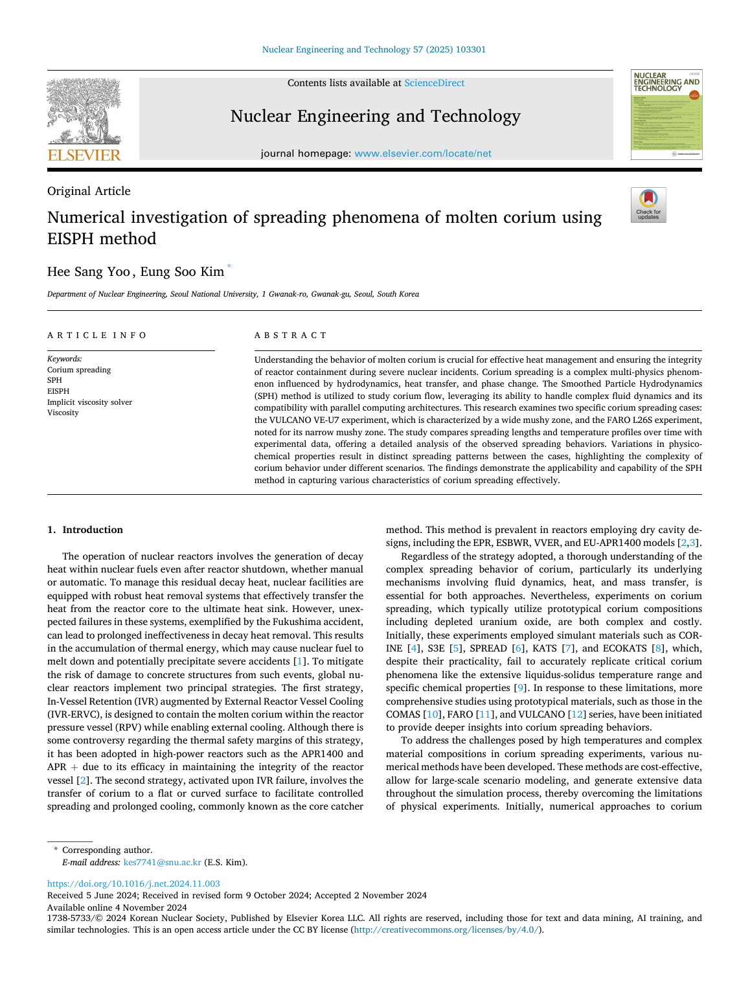
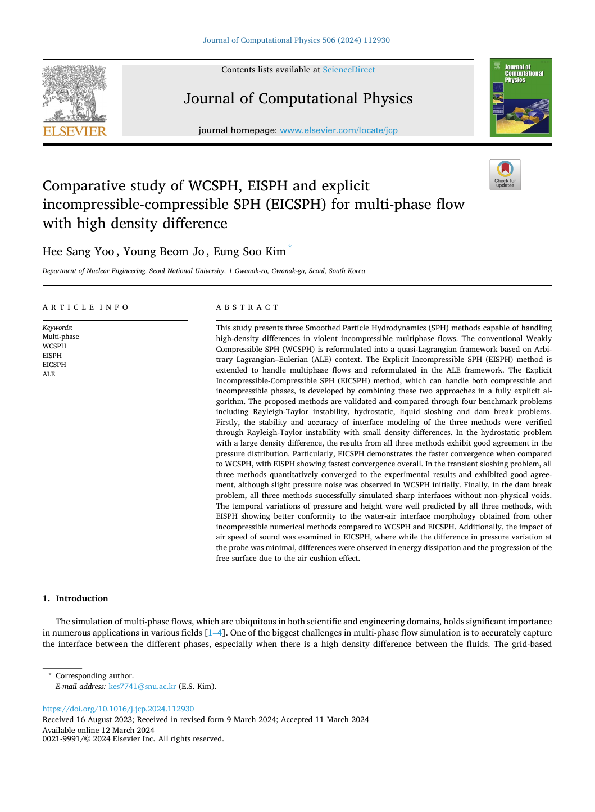
1 / 4

From Water to Dielectric Fluids: Pool Boiling Research under Pressure and Subcooling for Next-Generation Cooling
Renewable and Sustainable Energy Reviews, 239, 116852
2024 JCR: Top 2.4% · IF 16.3
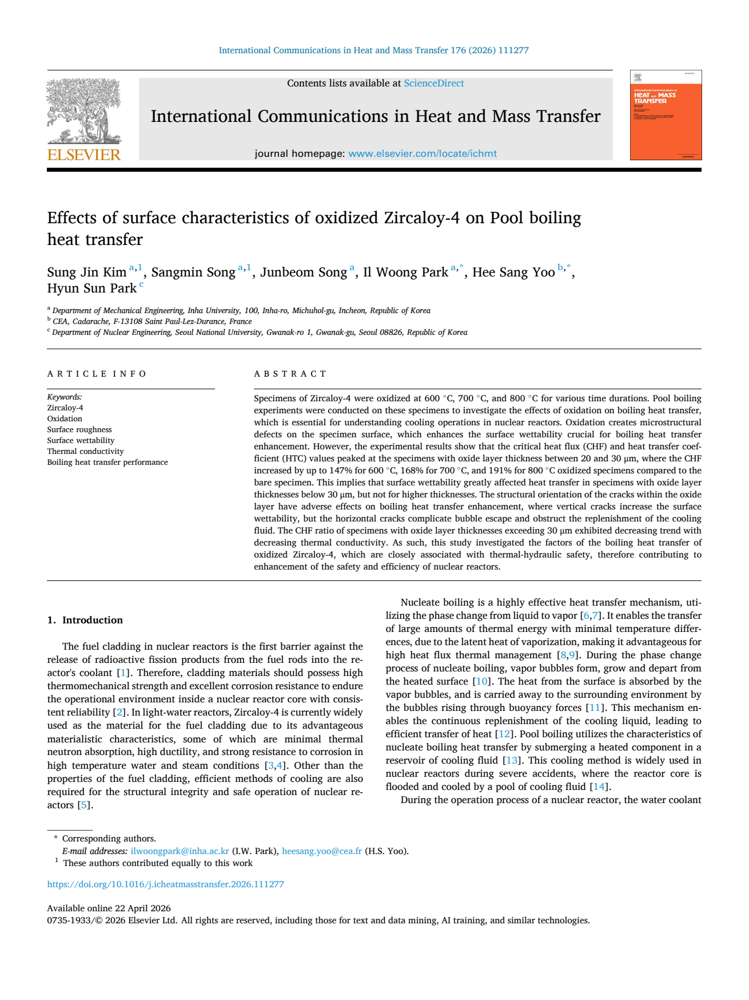
Effects of Surface Characteristics of Oxidized Zircaloy-4 on Pool Boiling Heat Transfer
International Communications in Heat and Mass Transfer, 176, 111277

Dynamic Load Balancing for Multi-GPU Smoothed Particle Hydrodynamics Using Two-Dimensional Staggered Domain Decomposition
Advances in Engineering Software, 216, 104123
A Steady-State Eulerian Smoothed Particle Hydrodynamics (SPH) Approach for Incompressible Flow and Heat Transfer Using the Semi-Implicit Method for Pressure-Linked Equations (SIMPLE) Algorithm
International Journal for Numerical Methods in Engineering, 127(1), e70255

Coupled EISPH–OSPD Framework for Modeling Hydroelastic Response and Brittle Fracture
Computational Mechanics, 77(4), 1025–1059

Comparative Evaluation of Matrix-Free Implicit Viscosity Solvers for GPU-Accelerated SPH Simulation of Highly Viscous Fluids
Computational Particle Mechanics, 12, 4107–4130
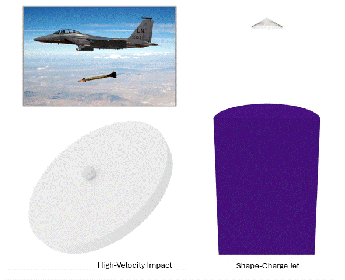
GPU-Parallelized SPH Solver for Accurate Hypervelocity Impact Simulation of Shaped Charge Jet Penetration in Concrete Structures
International Journal of Fracture, 249(3), 52

Numerical Investigation of Spreading Phenomena of Molten Corium Using EISPH Method
Nuclear Engineering and Technology, 57(4), 103301

Simulation of Shockwave Propagation Characteristics in Nuclear Reactor Cavity During External Steam Explosion Using Unified SPH
Nuclear Engineering and Technology, 57(4), 103274
Dynamic Load Balancing of Multi-GPU Parallelization for VULCANO VE-U7 Corium Spreading Analysis Using SOPHIA
Nuclear Technology, 211(6), 1316–1336

Comparative Study of WCSPH, EISPH and Explicit Incompressible-Compressible SPH (EICSPH) for Multi-Phase Flow with High Density Difference
Journal of Computational Physics, 112930

A Simple Eulerian–Lagrangian Weakly Compressible Smoothed Particle Hydrodynamics Method for Fluid Flow and Heat Transfer
International Journal for Numerical Methods in Engineering, 124(4), 928–958 Featured Cover ↗
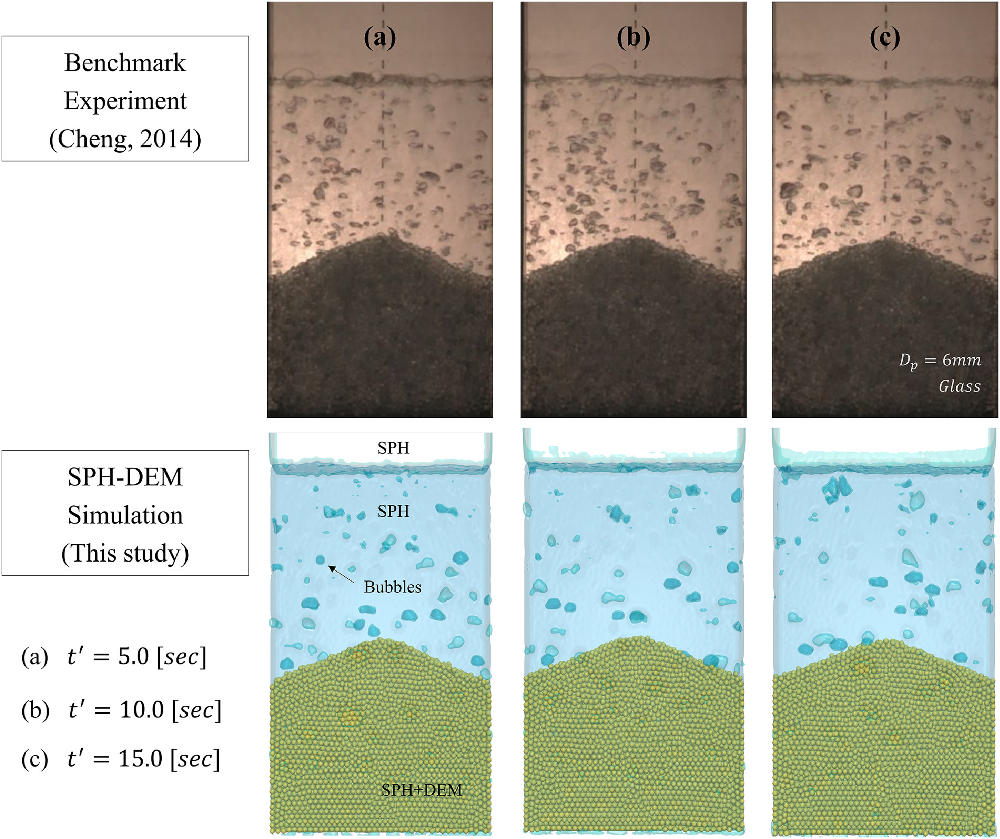
GPU-Based SPH-DEM Method to Examine the Three-Phase Hydrodynamic Interactions Between Multiphase Flow and Solid Particles
International Journal of Multiphase Flow, 153, 104125
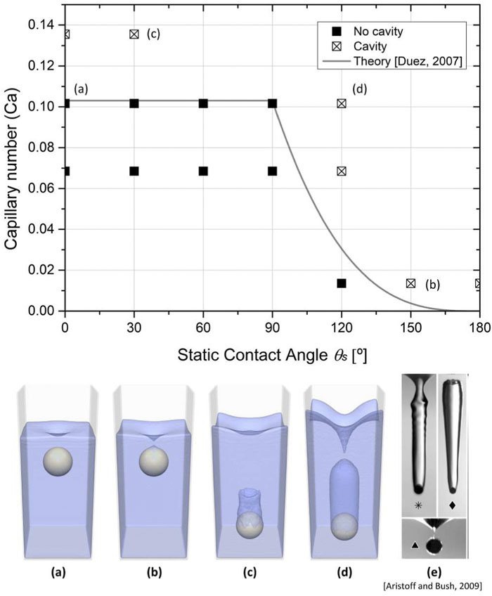
Effect of Wettability on the Water Entry of Spherical Projectiles: Numerical Analysis Using Smoothed Particle Hydrodynamics
AIP Advances, 12(3), 035014
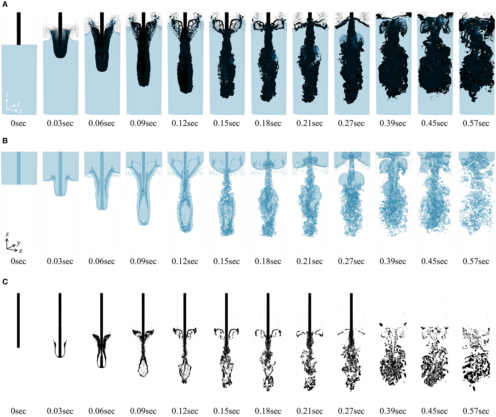
Development of Multi-GPU-Based Smoothed Particle Hydrodynamics Code for Nuclear Thermal Hydraulics and Safety: Potential and Challenges
Frontiers in Energy Research, 8, 86
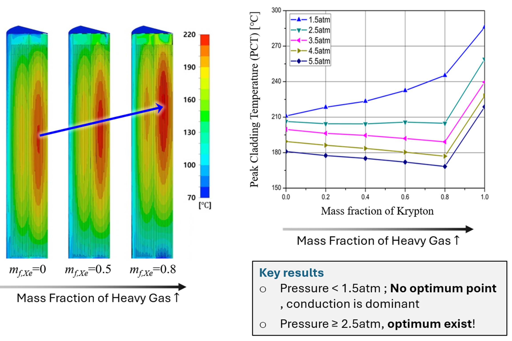
Heat Transfer Enhancement in Dry Cask Storage for Nuclear Spent Fuel Using Additive High Density Inert Gas
Annals of Nuclear Energy, 132, 108–118
Multiphysics Coupling of APOLLO3 and CATHARE3 via the C3PO Platform for Analysis of CABRI Power Transients
A Smoothed Particle Hydrodynamics Model for Safety Assessment of the Ex-vessel Core Catcher under Reactor Vessel Failure
Particle-Based Approaches to Multiphysics Simulation in Nuclear Safety
Numerical Investigation on the Safety Assessment of an Ex-vessel Core Catcher under Large-break Reactor Vessel Failures Using Smoothed Particle Hydrodynamics
GPU-accelerated Explicit Incompressible-Compressible SPH for multi-phase flow with large density difference
Heat Transfer Enhancement of Dry Cask Storage System Using Binary Helium and Heavy Inert Gas Mixture
The Investigation of Flow Characteristics in 3-Pin Wire-Wrapped Fuel Bundle Using Laser-Based Measurement Techniques
CABRI
Numerical Analysis of Melting and Interfacial Flow in a Direct-Contact Latent Heat Storage System Reflecting the Marangoni Effect
Numerical Investigation of Corium Spreading Phenomena using Smoothed Particle Hydrodynamics
Dynamic Modeling for 20 kWe Heat Pipe Fission Battery with Dual Power Conversion System
Dynamic Modeling of Free Piston Stirling Generator for Micro Nuclear Reactors
Development of an Eulerian–Lagrangian Coupling Method Using SPH
Comparative Analysis of Recent Pressure-Noise Reduction Methods for Free-Surface Flow and Fluid–Structure Interaction Using SPH
Numerical Simulation on Spreading and Impact Behavior of a Single Droplet Using Smoothed Particle Hydrodynamics
Thermal Performance Enhancement of Dry Cask Storage System Using Helium-Based Binary Gaseous Mixture
NEA-1911 · OECD-NEA Official Repository
Description: SOPHIA is a GPU-enabled, particle-based multiphase flow solver built on smoothed particle hydrodynamics (SPH),
Lagrangian discretization, and matrix-free iterative solvers. Designed for high-fidelity thermal-hydraulic analysis of corium
spreading, severe accidents, free-surface dynamics, highly viscous multiphase systems, and fluid–structure interaction.
Principal Investigator: Prof. Eung Soo Kim
Co-Developers: Y. B. Jo, S. H. Park, H. Y. Choi, T. S. Choi, S. S. Park, H. S. Yoo, Y. L. Ahn, J. H. Kim, T. H. Lee, H. Chae, J. M. Park, J. R. Kim, D. H. Kim
Join Us
MONAMI 연구실은 원자력 시스템을 더 정확하고 효율적으로 해석하는 계산과학 연구에 관심 있는 학생을 기다립니다. 원자력 열수력, 다물리·다중스케일 해석, 입자 기반 수치해석, GPU 병렬계산 및 디지털트윈 기술에 관심이 있다면 함께 새로운 문제에 도전할 수 있습니다.
수치해석, 프로그래밍 또는 원자력공학 경험은 연구를 시작하는 데 도움이 되지만 필수는 아닙니다. 원자력 계산과학과 시뮬레이션 연구에 관심이 많고, 새로운 문제를 꾸준히 탐구하고 싶은 학생을 기다립니다.
아래 지원 설문을 작성해 주세요. 추가 문의는 heesang.yoo@jbnu.ac.kr로 보내주시기 바랍니다. 모집 여부는 시기와 연구실 상황에 따라 달라질 수 있습니다.
Apply via Google Form ↗Visit & Contact
Students and researchers interested in MONAMI Lab are always welcome to get in touch.
Room 416, Engineering Building No. 8
Jeonbuk National University
567 Baekje-daero, Deokjin-gu, Jeonju 54896, Republic of Korea
전북특별자치도 전주시 덕진구 백제대로 567
전북대학교 공과대학 8호관 416호
Prospective students may introduce their background and research interests briefly by email.